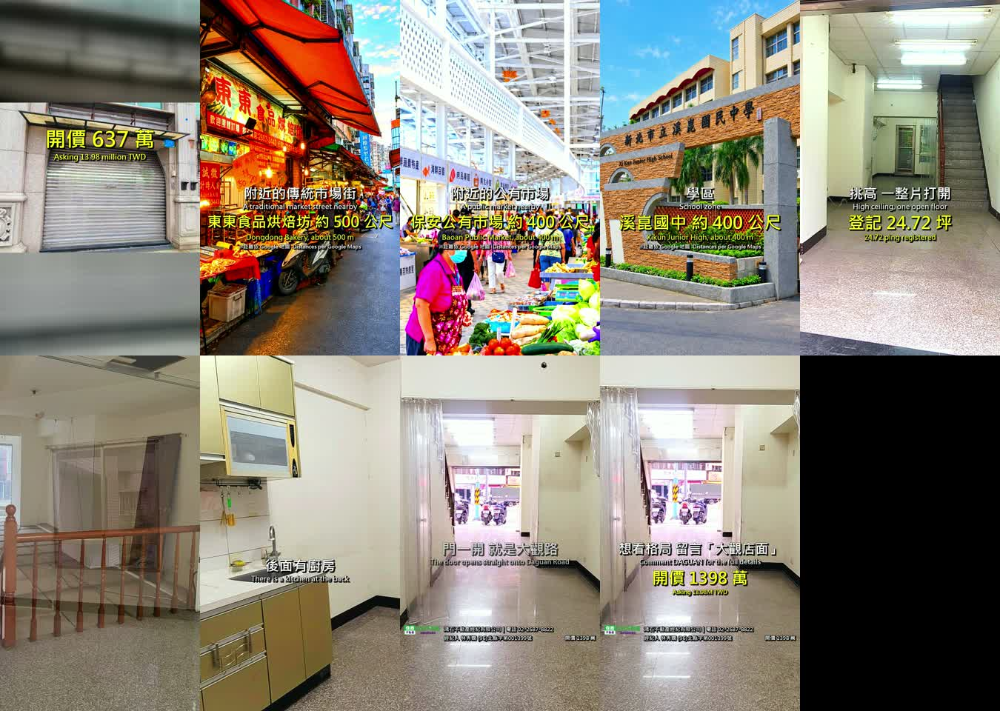

051 大觀路金店面 開箱片點交
051-1V 二版｜34.5 秒｜店面三幕｜2026-09-10 出廠｜任務 50-0910-01
① 影片
下載母帶 50.0 MB
手機版 11.3 MB
1080×1920 30fps H.264 含音軌 52,467,258 bytes（本機／雲端／實開三方對過）

你退件的四句，這版怎麼改的
| 「第一開場要門面 不是從內拍出去」 | 開場換回鐵捲門正面外觀 |
| 「因為是店面 開場店面 第二幕 可以帶入市場相片 第三幕 再從內部介紹」 | 改三幕：門面 5.5 秒（1 鏡）→ 這條街 10.4 秒（市場街／市場攤位／校門）→ 裡面 15.6 秒（4 鏡）→ 收尾 7.8 秒 |
| 「相同的場景不用出現兩次」 | 抽出兩組同場景拿掉：挑高廣角 × 走道往樓梯（同一座樓梯同一扇後門）、夾層俯瞰 × 夾層另一角（同一段扶手同一個天花板開口）。11 鏡 → 9 鏡 |
| 「最後的畫面可停留在街景生活感」 | 收尾停在店門口往街上：騎樓、機車、對街店招 |
留著的一組邊界：挑高廣角跟收尾往門口是同一條走道的兩頭，一個看樓梯、一個看街。畫面內容完全不同，我判不同場景留著。你覺得算重複一個字我就拿掉。
② 事實來源
| 案名 | 051 大觀路金店面
官網原名帶「穩穩賺錢」，依你 2026-09-10 令不採用投資建議名稱，全片零「穩穩賺」 |
| 官網編號 | QS45678（住商 A635） |
| 合約編號 | Z1892176 |
| 開價 | 1398 萬 |
| 登記坪數 | 24.72 坪（主建 18.54／附屬 0.8／公設 5.38） |
| 土地 | 4.1 坪 |
| 樓層 | 1 樓，共 12 層 |
| 屋齡／現況 | 19 年 ／ 空屋 |
| 車位 | 無（帶看單明寫，判定無車位，不做車位鏡頭） |
| 路寬／管理費 | 12 米 ／ 1165 元每月 |
帶看單 × 官網逐欄對過，全部相符。差異零筆。
③ 素材與天花板
- 附件原檔 4032×3024，用了 3 張（挑高廣角／夾層有窗／往門口）
- 後台原檔 2048×1536，用了 2 張（夾層俯瞰／廚房）
- 市場與學區 你親自挑的 3 張，全用在第二幕
- 🔴 外觀只有官網 383×287 照你說的放開場，走同圖模糊鋪底放大 2.82 倍，畫面偏軟是素材上限不是製作問題
- 🔴 天際比例拿不到 全案零張含天空的高清外觀
④ 出廠檢查
| 音軌 | 🟢 PASS 開場與收尾都有聲音 |
| 轉場字面值 | 🟢 PASS 有 transition=fade，無任何幾何轉場 |
| 長度算術 | 🟢 PASS 段長 39.30 − 8×0.60 ＝ 34.50，實測 34.50 |
| 段間亮度 | 🟢 PASS 接點無閃爍 |
| 靜滯偵測 | 🟢 PASS 排除轉場窗後無靜滯 |
| 重複場景 | 🟢 標名抽幀逐對人眼看過（程式量不出同場景不同縮放，不拿它當證據） |
| 四軸實測 | 亮度 142.9／亮度 std 24.14／極差 75.0／飽和度 14.6 |
🟡 飽和度停在 14.6，沒推到規格目標 22-24，這是刻意的。
規格那個 22-24 是你對佳陞豐川那批對照樣本指認出來的，那是有家具軟裝的室內（原始飽和度 14.4）。這案是空屋白牆，原始只有 7.8，先天差一倍。
上一輪我實際推到 22.5 做了一版，數字達標但畫面壞了——白牆變粉紅、地板變粉紫、木扶手變鮮紅。
要不要為空屋另訂一個目標值，你一句話。
⑤ 貼文三框
框一 標題
大觀路上這間一樓 樓上還藏一層
框二 正文
板橋大觀路，篤行路口那一段。
一樓面寬對著 12 米大路，門一開就是人來人往的那一面。
進去之後才是重點——挑高，一整片打開，上去還有一層合法夾層。
登記 24.72 坪，但你實際能用的是兩層。
現況空屋，隨時可以進場。
開價 1398 萬。
#板橋店面 #大觀路 #一樓店面 #合法夾層
框三 置頂留言
想看格局圖跟完整屋況，留言「大觀店面」，我私訊給你。
開價不等於成交價，實際成交價以雙方簽約為準。
⑥ 配樂完成版回傳
你配樂、剪接、改動之後的那一版，
丟回這個案子的雲端素材夾，跟上面兩支影片放同一個資料夾：
物件素材 ／ 051大觀路金店面
檔名：051-1V_大觀路金店面_無人開箱_配樂版.mp4
真正發出去的是你改過的那一版，我這版只是半成品。
開價不等於成交價 實際成交價以雙方簽約為準。
經紀業 鴻石不動產經紀有限公司｜住商不動產樹林站前加盟店
經紀人 林秀嫻 (96)北縣字第001399號
營業員 何志宏 (114)年登字第495065號